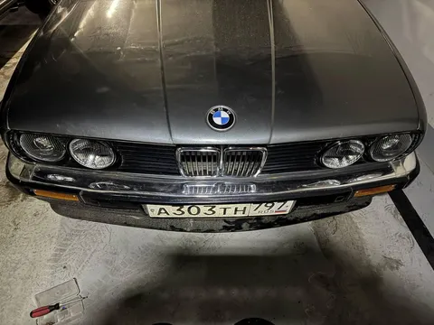
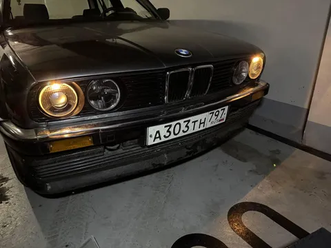
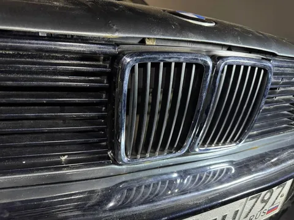

Финальных штрих в преображении фронтальной части бэхи - новые хромированные ноздри. В упор не понимаю антихрома на классических авто - янгтаймер должен блистать! Посему старые черные ноздри сразу отправляются в мусорку, а их место занимают новенькие и блестящие. Но если б все было так просто. У нас же, как всегда, не без нюансов.
Во-первых, замена решетки заняла полтора месяца. Не чистого времени, конечно, но от и до. Потому что снять старую решетку - минутное дело, но водрузить новую можно было лишь после установки "очков", между которыми она крепится, а очки ждали фары, а фары ждали фишки, и так далее.
Во-вторых, снизу решетка крепится на четыре усика. И у новой решетки три оказались отломаны. Хотя казалось бы. Благо, сидит она все же крепко и так. А то я уже боялся, что придется скатываться либо в стяжки, либо в саморезы, а не хотелось.
В-третьих, сверху решетка крепится штырьком, заходящим в отверстие в телевизоре. Но так как машинка, видимо, не раз получала по морде, отверстие оказалось неотцентрировано относительно места установки. Пришлось сверлить новое.
Итого, теперь анфас полная красота. А впереди еще несколько кардинальных преображений, work in progress. #лёха_строит_бэху
